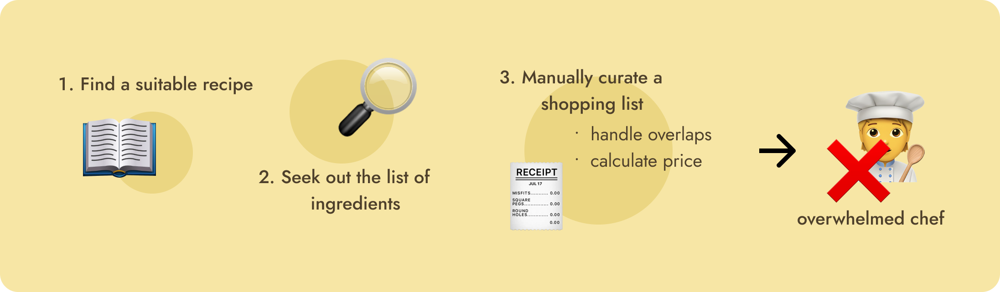
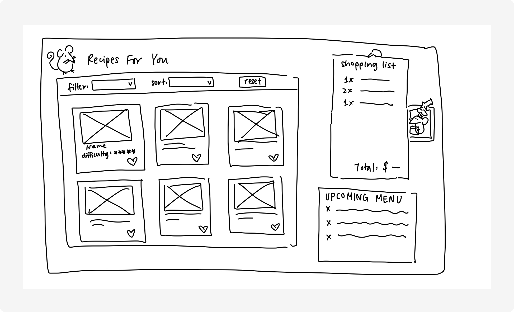
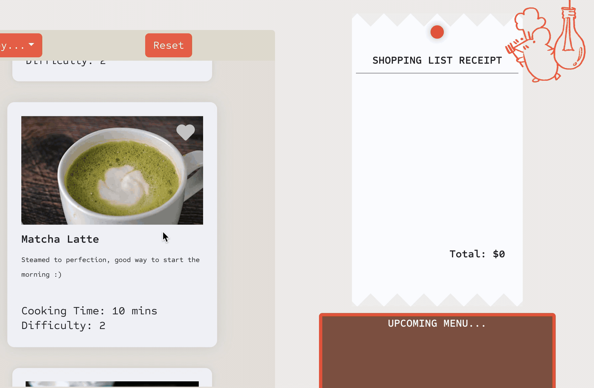

Remy's Playground
INTRODUCTION
MY ROLE
Responsible for the conceptualization, design, and implementation of a recipe aggregator platform for aspiring chefs.
TIMELINE
Spring 2024
PROBLEM STATEMENT
There is no all-in-one platform for compiling cooking recipes to a shopping list, making the barrier to learning cooking higher than it has to be
BREAKDOWN OF THE PROBLEM:

SOLUTION
Build a platform that allows the user to browse, save, and aggregate a shopping list based on recipes they are interested in. Implement filtering & sorting capabilities to allow personalized results and handle changes dynamically without extra work from the user.
To build a more inclusive user-experience when interacting with the platform, I conducted a Competitor Analysis for food platforms with a “favouriting” feature ( UberEats, Amazon, Simply Recipes).
COMPETITOR ANALYSIS
| Factors |

|
||
|---|---|---|---|
| Sort & Filter options provided? | |||
| Sorting Capabilities | *default to display restaurant availability | - recently added - price |
- newest - alphabetical |
| Filtering Capabilities | -- | - purchased - not purchased - price dropped |
-- |
| Favouriting option is visible upon initial interaction? | |||
| Require user account in order to save? | |||
| Visual representation of the “favourite” button | |||
| Consistent format & visual symbols between favouriting & favourites list? |
SUMMARY
Uber Eats:
Pros: Easy, accessible, & consistent layout that allows a streamlined user experience from browsing, to “hearting”, to accessing the hearted restaurants.
Cons: Lack of sort & filter which makes it hard to navigate the hearted list.
Amazon:
Pros: Advanced filtering & sorting options which allows ease of browsing.
Cons: Inconsistent “favouriting” experience since hearted items turn into “saves”.
Simply Recipe
Pros:Simple sorting options which allow ease of navigation without overcrowding the interface & consistent association of “heart”.
Cons: Hard to find the “save it” button
PROJECT GOALS
Tackle the pain points displayed by competitors by integrating the following features:
- Simple sorting (by recipe difficulty and time) & filtering options (alphabetical) to elevate the browsing experience
- Consistent “hearting” experience
- Accessible “heart” button that is intuitive to use
- Aggregated list that compiles the list of ingredients and calculates the total price
Lo-Fi protoype


One-Pager